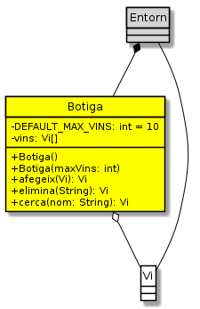

Ejercicios — 31.02 — botiga
Botiga
Enunciat
Un cop ja tenim la classe Vi és un bon moment per implementar la classe Botiga.
Diagrama de classes de la botiga de vins
La classe Botiga ens permetrà gestionar la col·lecció de vins de la botiga de la Sra. Estrella.
Donat que necessitarem emmagatzemar vàries instàncies de Vi, en aquesta primera versió farem servir un array de Vi.
Suposarem que la botiga tindrà un nombre màxim de vins. Aquest màxim pot ser indicat amb el constructor específic, o bé pren el valor per defecte indicat per la constant DEFAULT_MAX_VINS, que val 10, en cas que no sigui indicat o que el valor indicat sigui menor que 1.
El diagrama anterior representa l’array vins amb un màxim de 8 vins, que de moment només en disposa de dos.
El mètode afegeix() ens permetrà afegir un nou vi a la col·lecció. Per fer-ho, comprovarà que el vi sigui vàlid i no hi hagi cap altre vi amb el mateix nom a la col·lecció. Si troba un altre vi amb el mateix nom, no fa res i retorna null. Un cop comprovar que no hi ha cap altre vi amb el mateix nom, cercarà una entrada de l’array que apunti a null, la ocuparà amb el nou vi i retornarà el vi introduït com a senyal que tot ha anat bé.
En cas que no trobi cap espai buit, retornarà null per indicar que no ha anat bé.
La funcionalitat més important de la botiga és la possibilitat de cercar un vi. De moment només permetrà cercar pel nom. cerca() rebrà un String que cercarà pels vins de la botiga fins a trobar un que tingui aquest valor com a nom. En cas de trobar-lo, el retornarà. Altrament retornarà null. Caldrà normalitzar el nom del vi per cercar-lo.
El mètode elimina() ens permet eliminar un vi de la botiga. El mètode rep el nom d’un vi i intenta trobar una instància de Vi amb aquest nom, dins la coŀlecció. Si no la troba, retorna null per indicar que no ha tingut èxit. En cas de trobar la instància, comprovarà si encara té estoc. Si és així, també retornarà null i no l’eliminarà. Finalment, si la instància no té estoc, marcarà la seva posició a l’array com a null i la retornarà.
Per descomptat, tant cerca() com elimina() normalitzaran el nom a cercar. Altrament, és fàcil que no el trobin! Què haig de fer?
Implementa la classe Botiga amb la descripció anterior.
Per provar la teva classe, considera UsaBotiga.java:
public class UsaBotiga {
public static void main(String[] args) {
System.out.println("Creem uns quants vins");
Vi[] vins = {
new Vi(«Roura Blanc», 1234, 42),
new Vi(«Cercium», 535, 30),
new Vi(«Llum d’Alba Blanc», 1750, 12)
};
for (int i=0; i<vins.length; i++) {
System.out.println("Creat" + vins[i]);
}
Botiga botiga = new Botiga(vins.length - 1); // no hi cabran tots els vins
System.out.println("Afegim els vins creats a la botiga");
for (int i=0; i<vins.length; i++) {
Vi resposta = botiga.afegeix(vins[i]);
System.out.println("En afegir" + vins[i] + "la botiga ens respon " + resposta);
}
System.out.printf("%nCerquem uns vins%n");
String nomVi = vins[1].getNom();
Vi resposta = botiga.cerca(nomVi);
System.out.println("En cercar " + nomVi + " botiga ens respon " + resposta);
nomVi = vins[vins.length - 1].getNom();
resposta = botiga.cerca(nomVi);
System.out.println("En cercar " + nomVi + " botiga ens respon " + resposta);
}
}
En breu, UsaBotiga crea uns quants vins, crea una botiga que no té espai per tants vins i li intenta afegir tots els vins creats. Finalment cerca un dels vins que ha d’estar afegit correctament i un altre que no hi cabia.
L’execució haurà de generar la següent sortida:
Creem uns quants vins Creat Vi: Roura Blanc Preu: 1234 Estoc: 42
Creat Vi: Cercium Preu: 535 Estoc: 30
Creat Vi: Llum d’Alba Blanc Preu: 1750 Estoc: 12
Afegim els vins creats a la botiga En afegir Vi: Roura Blanc Preu: 1234 Estoc: 42 la botiga ens respon Vi: Roura Blanc Preu: 1234 Estoc: 42
En afegir Vi: Cercium Preu: 535 Estoc: 30 la botiga ens respon Vi: Cercium Preu: 535 Estoc: 30
En afegir Vi: Llum d’Alba Blanc Preu: 1750 Estoc: 12 la botiga ens respon null
Cerquem uns vins En cercar Cercium botiga ens respon Vi: Cercium Preu: 535 Estoc: 30
En cercar Llum d’Alba Blanc botiga ens respon null
public class Botiga {
private static int DEFAULT_MAX_VINS = 10;
private Vi[] vins;
public Botiga() {
this.vins = new Vi[DEFAULT_MAX_VINS];
}
public Botiga(int maxVins) {
if (maxVins > 0) {
this.vins = new Vi[maxVins];
} else {
this.vins = new Vi[DEFAULT_MAX_VINS];
}
}
public Vi afegeix(Vi vi) {
if (vi.esValid()) {
if (cerca(vi.getNom()) == null) {
for (int i = 0; i < vins.length; i++) {
if (vins[i] == null) {
vins[i] = vi;
return vi;
}
}
} else {
return null;
}
}
return null;
}
public Vi elimina(String nom) {
nom = Vi.normalitzaNom(nom).toLowerCase();
for (int i = 0; i < vins.length; i++) {
if (vins[i] != null) {
String nomVi = vins[i].getNom().toLowerCase();
if (nomVi.equals(nom)) {
if (vins[i].getEstoc() <= 0) {
Vi viTmp = vins[i];
vins[i] = null;
return viTmp;
}
}
}
}
return null;
}
public Vi cerca(String nom) {
nom = Vi.normalitzaNom(nom).toLowerCase();
for (int i = 0; i < vins.length; i++) {
if (vins[i] != null) {
String nomVi = vins[i].getNom().toLowerCase();
if (nomVi.equals(nom)) {
return vins[i];
}
}
}
return null;
}
}
UsaBotiga
public class UsaBotiga {
public static void main(String[] args) {
System.out.println("Creem uns quants vins");
Vi[] vins = {
new Vi("Roura Blanc", 1234, 42),
new Vi("Cercium", 535, 30),
new Vi("Llum d'Alba Blanc", 1750, 12)
};
for (int i=0; i<vins.length; i++) {
System.out.println("Creat" + vins[i]);
}
Botiga botiga = new Botiga(vins.length - 1);
System.out.println("Afegim els vins creats a la botiga");
for (int i=0; i<vins.length; i++) {
Vi resposta = botiga.afegeix(vins[i]);
System.out.println("En afegir" + vins[i] + "la botiga ens respon " + resposta);
}
System.out.printf("%nCerquem uns vins%n");
String nomVi = vins[1].getNom();
Vi resposta = botiga.cerca(nomVi);
System.out.println("En cercar " + nomVi + " botiga ens respon " + resposta);
nomVi = vins[vins.length - 1].getNom();
resposta = botiga.cerca(nomVi);
System.out.println("En cercar " + nomVi + " botiga ens respon " + resposta);
}
}
Vi
Enunciat
Una botiga de vi sense vi no és res. Així que començarem implementant aquesta classe tant important.
Diagrama de classes de la botiga de vins
De moment no hem fet un anàlisi gaire exhaustiu de les propietats que ens interessarà tenir en compte sobre els vins. Ens estimem més oferir-li a la Sra. Estrella una primera versió en funcionament.
nom: el nom oficial del producte. Ex. Roura blanc
Es codifica amb un String i no pot ser buit ni contenir només espais.
Es guarda sense espais a l’inici, ni al final, ni més d’un espai seguit entre mig. És a dir, si rebem « Roura blanc «, el guardarem com a «Roura blanc». Tot el que no sigui espais, quedarà guardat tal i com es rebi. És a dir, no canviarem majúscules/minúscules. A aquesta modificació del nom li direm normalització i el mètode estàtic normalitzaNom() se n’encarregarà de realitzar-la.
En cas que normalitzaNom() rebi un nom no vàlid, retornarà el valor «NOM NO VÀLID!», el que farà que la instància sigui considerada com no vàlida pel mètode esValid().
Tota instància de Vi ha de tenir un nom i, per tant, ha d’aparèixer especificat als constructor.
Com que no ha de ser modificat mai, pot ser declarat final.
preu: l’import a la venda (en cèntims d’euro i sense iva)
Es codifica amb un enter, de manera que 12,5€ es guardaran com 1250. El preu mai no hauria de ser negatiu.
El valor inicial pot ser modificat amb el mètode setPreu(). En cas que se li indiqui un valor negatiu, setPreu() mantindrà el preu antic.
Tota instància de Vi ha de tenir un preu i, per tant, ha d’aparèixer especificat als constructor.
En cas que un constructor rebi un preu negatiu, deixarà com a valor -1, el que farà que la instància sigui considerada com no vàlida pel mètode esValid().
estoc: indica el nombre d’ampolles que es tenen d’aquest vi a la botiga.
El nombre d’ampolles no pot ser mai negatiu. Si s’intenta afegir un valor no vàlid, quedarà amb el valor anterior.
En crear-se un Vi, l’estoc serà 0 a menys que s’especifiqui al constructor específic corresponent.
En cas que el constructor rebi un estoc negatiu, deixarà com a valor -1, el que farà que la instància sigui considerada com no vàlida pel mètode esValid().
A banda, Vi sobreescriurà (override) el mètode toString() de manera que es mostrin les dades del vi d’una manera còmoda. Considera la classe MostraVi.
public class MostraVi {
public static void main(String[] args){
System.out.println(new Vi("Roura Blanc", 1234, 42));
}
}
En executar-la, tindrem:
java·MostraVi¶ ¶
···Vi:·Roura·Blanc¶
···Preu:·1234¶
···Estoc:·42¶
Nota: a la sortida anterior he remarcat els salts de línia ¶ i els espais ·. Què haig de fer?
Implementa la classe Vi segons la descripció anterior.
Per provar la teva classe, considera UsaVi.java:
public class UsaVi {
public static void main(String[] args) {
System.out.println("Vi sense estoc" + new Vi("Roura blanc", 1234));
Vi vi = new Vi("Roura blanc", 1234, 24);
System.out.println("Vi amb estoc" + vi);
vi.setPreu(vi.getPreu() + 120); // incrementa preu del vi
vi.setEstoc(vi.getEstoc() - 10); // decrementa el nombre d'ampolles
System.out.println("Vi modificat" + vi);
}
}
L’execució haurà de generar la següent sortida:
Vi sense estoc Vi: Roura blanc Preu: 1234 Estoc: 0
Vi amb estoc Vi: Roura blanc Preu: 1234 Estoc: 24
Vi modificat Vi: Roura blanc Preu: 1354 Estoc: 14
public class Vi {
private final String nom;
private int preu;
private int estoc = 0;
public Vi(String nom, int preu) {
this.nom = normalitzaNom(nom);
if (preu < 0) {
this.preu = -1;
} else {
this.setPreu(preu);
}
}
public Vi(String nom, int preu, int estoc) {
this.nom = normalitzaNom(nom);
if (preu < 0) {
this.preu = -1;
} else {
this.setPreu(preu);
}
if (estoc < 0) {
this.estoc = -1;
} else {
this.setEstoc(estoc);
}
}
public String getNom() { return this.nom; }
public int getPreu() { return this.preu; }
public void setPreu(int preu) {
if (preu >= 0) { this.preu = preu; }
}
public int getEstoc() { return this.estoc; }
public void setEstoc(int estoc) {
if (estoc >= 0) { this.estoc = estoc; }
}
public boolean esValid() {
if (this.getNom().equals("NOM NO VÀLID!")) { return false; }
if (this.getPreu() < 0) { return false; }
if (this.getEstoc() < 0) { return false; }
return true;
}
@Override
public String toString() {
return String.format("%n Vi: %s%n Preu: %d%n Estoc: %d%n", this.getNom(), this.getPreu(), this.getEstoc());
}
public static String normalitzaNom(String nom) {
if (nom.isBlank()) {
return "NOM NO VÀLID!";
}
nom = nom.strip();
String nomNormalitzat = "";
boolean espai = false;
for (int i = 0; i < nom.length(); i++) {
char c = nom.charAt(i);
if (!Character.isWhitespace(c)) {
nomNormalitzat += c;
espai = false;
} else {
if (!espai) {
nomNormalitzat += " ";
}
espai = true;
}
}
return nomNormalitzat;
}
}
Diagrama UML
